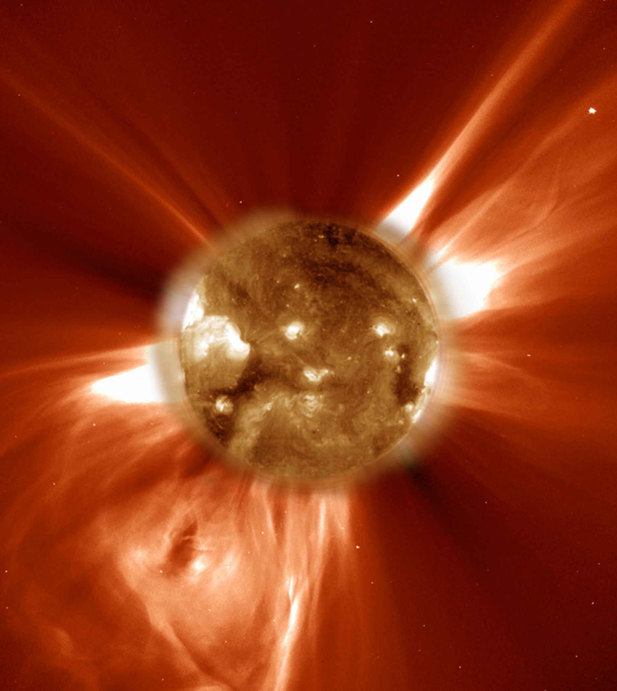
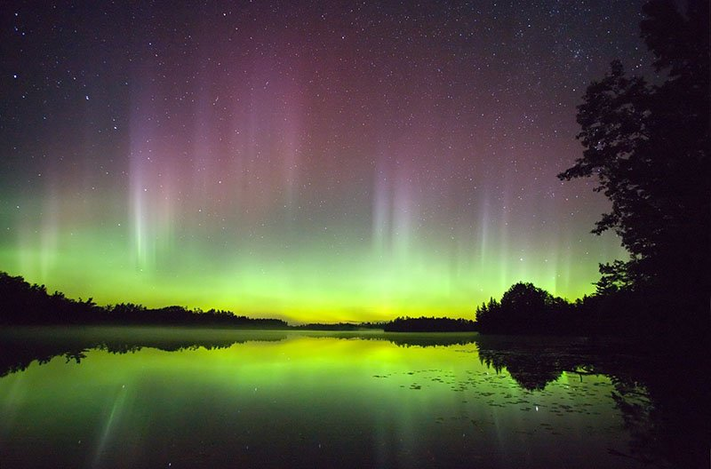

태양풍
태양풍은 태양에서 불어오는 바람이라 할 수 있다.
이 태양풍에는 양성자와 전자 등 미립자들이 포함되어 있으며, 매초 약 100만 톤의 질량이 태양에서 방출된다.
이것이 지구의 공전궤도에 도착할 즈음 속력은 약 200~750km/s 이다. 태양풍은 크게 빠른 태양풍과 느린 태양풍으로 나눌 수 있다. 빠른 태양풍은 약 750km/s의 속도이며 코로나 구멍과 연관이 깊다. 느린 태양풍은 빠른 태양풍에 비해 절반 정도의 속도이며, 코로나의 닫힌 자기장에 얽혀 흘러 다니는 물질들로부터 생성된다고 알려져 있다.
이 태양풍에는 양성자와 전자 등 미립자들이 포함되어 있으며, 매초 약 100만 톤의 질량이 태양에서 방출된다.
이것이 지구의 공전궤도에 도착할 즈음 속력은 약 200~750km/s 이다. 태양풍은 크게 빠른 태양풍과 느린 태양풍으로 나눌 수 있다. 빠른 태양풍은 약 750km/s의 속도이며 코로나 구멍과 연관이 깊다. 느린 태양풍은 빠른 태양풍에 비해 절반 정도의 속도이며, 코로나의 닫힌 자기장에 얽혀 흘러 다니는 물질들로부터 생성된다고 알려져 있다.

또한 혜성의 이온꼬리도 태양풍에 의해 설명된다.
혜성에는 두 가지의 꼬리가 보이는데 이는 먼지꼬리와 이온꼬리라 한다.
이들 중 태양에 근접하면 태양 반대방향으로 생기는 이온꼬리는 태양풍의 이온과 혜성의 이온 사이에 작용하는 전기력으로 설명이 가능하다.

오로라 역시 태양풍의 영향으로 생기는 현상이다. 태양풍에 포함된 이온들이 지구의 자기장과 상호작용하면서, 지구자기장에 갇힌다. 이 이온들 중 일부가 자기장의 남북극 근처의 상층대기와 만나 오로라를 형성하는 것이다.